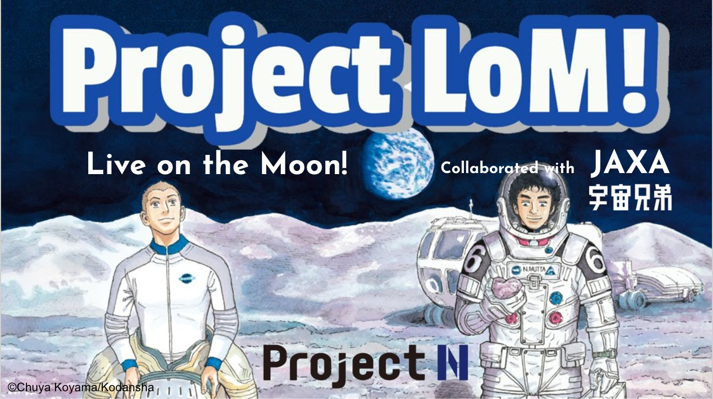
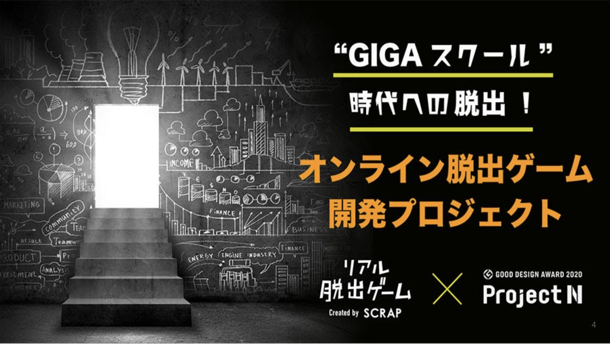
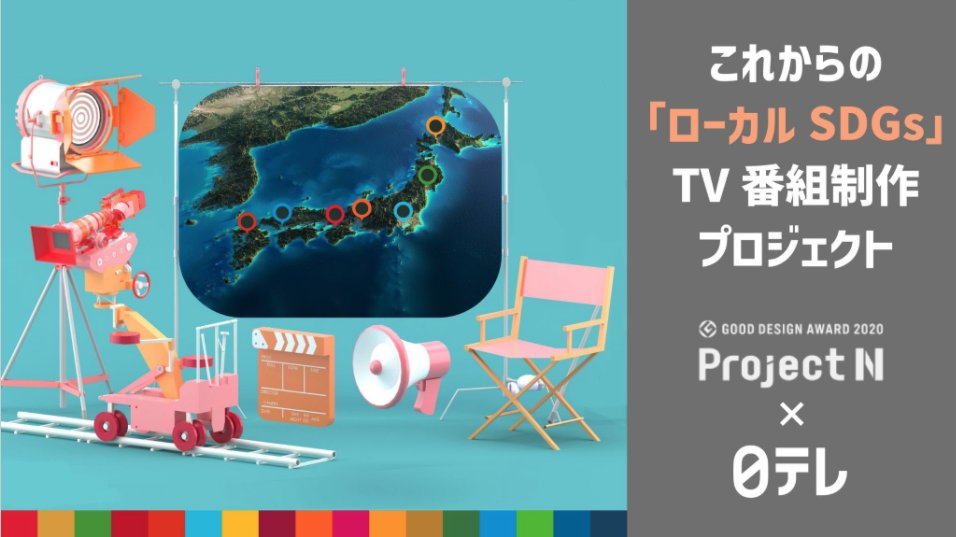
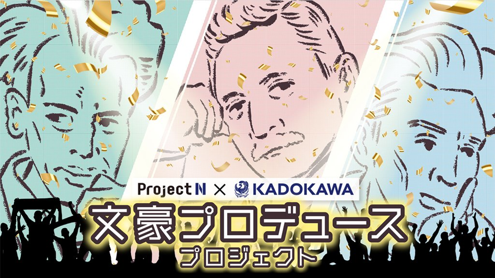

プロジェクトNは、高校生が社会に出て活躍するための知識やスキルを身に付ける課題解決型学習プログラムです。 具体的な解決策を企画し、制作物をアウトプットします。そして「プロジェクトN」を通してデジタル時代の社会で活躍できる人材を目指します。
1Q:Project LoM! Live on the MOON
プロジェクト概要
・月での生活における健康を維持する技術アイデア
・考案した技術アイデアを、地上の課題に転用する
この二つのテーマを解決する企画を作り、プレゼンテーションする。
プロジェクト目的
・未知なるものにも想像力を働かせ対応できる人物
・新しいテクノロジーに対する好奇心を持ち探求できる人材
プロジェクトを通してこの二つの人材を目指す
プロジェクトの感想
初めてのプロNβで最初はわからないことだらけだった。 プロジェクトを進めていくうちにグループワークを上手く進める方法がわかってきた。 成果物自体は満足のいくものを作ることはできなかったけど、学ぶことの多いプロジェクトだった。
2Q:GIGAスクール時代への脱出!「オンライン脱出ゲーム開発プロジェクト」
プロジェクト概要
GIGAスクール構想が進められている現代の小学校に導入する何らかの教育的要素を含んだオンライン版のリアル脱出ゲームを制作する
プロジェクト目的
論理的な思考力、創造性を発揮することはもちろん、どの役割であってもリーダーシップを発揮し、プロジェクトを成功に導く人材となる。
プロジェクトの感想
2Qのプロジェクトはチーム内での役割分担がかなり重要となるプロジェクトでした。 時世的にもオンラインでプロジェクトの大半をオンラインでこなさなければなりませんでした。 最初のうちはみんなでストーリーを考えていましたがなかなかいいものが出来上がらず、結局役割を完全に分担することになり僕はプログラミングを担当しました。 プログラミングもわからないところが多く、全体を通してとても難しいプロジェクトだったと思います。
3Q:これからの「ローカルSDGs」TV番組制作プロジェクト
プロジェクト概要
地域のSDGs課題・解決への取り組みをTV番組にまとめるプロジェクト
地域に着目してその地域独自のSDGs課題を解決する取り組みを5分間のTV番組にまとめる
プロジェクト目的
テキスト
プロジェクトの感想
このプロジェクトでは不登校問題に着目して企画を進めていきました。 不登校にあるマイナスのイメージを変えることを目的に、不登校の目線でそれを訴えかける番組を作成しました。 この企画を通して自分の考えがうまく整理でき、やってよかったと思いました。
4Q:文豪プロデュースプロジェクト
プロジェクト概要
日本の文豪をプロデュースするプロジェクト。
チームに分かれて日本の文豪を選択し、その作家と作品の魅力を世に伝えるプロモーション方法の企画提案をする。
プロジェクト目的
自国文化を理解し発信できる国際社会で活躍できる人材になることを目指す。
プロジェクトの感想
今回のプロジェクトでは作品の分析のかなりの時間をかけ、その上でプロデュース方法を慎重に考えました。 宮沢賢治の思いや思想を蔑ろにすることは、作品への敬意を損なうことだからです。 時間をかけて考えたことで自分としては満足のいくものができました。 また、それまでの企画ではあまり重要視していなかったペルソナ設定の大切さについても今回の企画で知りました。